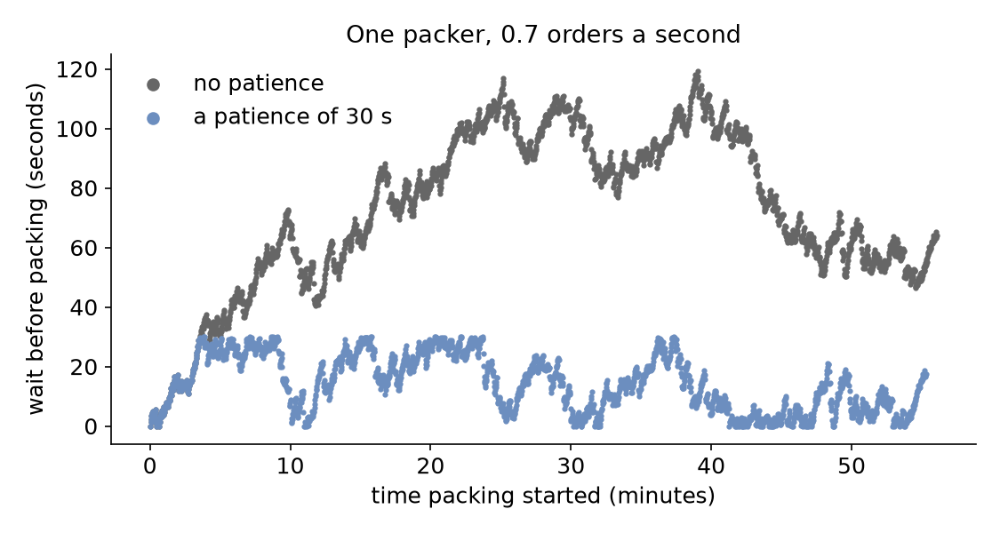

The shop now gets an order every 1.43 seconds on average (42 a minute, rate: 0.7). Its one packer packs one every 1.5 seconds (40 a minute), so orders arrive faster than they can be packed. A real customer does not wait for ever: one whose order has not started within 30 seconds cancels it. The courier also leaves at the hour, so the shop takes no new orders in the last five minutes. This page asks: which orders leave or refuse to join, and what does that do to the wait of the others?
Decision: which figures the shop reports for an hour in which customers may leave.
Measures: the orders that leave the queue or refuse to join, and the mean and longest wait of the packed orders.
Runs: two runs of the hour, one with a patience of 30 seconds and one without, each with the seed 42.
Assumptions: orders arrive at random, every order takes the same time to pack, and every customer has the same patience.
What You Add
This page adds a patience and a balk condition to the packing task. The shop is the one from First Simulation, with one packer and 1.5 seconds of packing, but with an order every 1.43 seconds on average.
Leave After a Wait
An entity that leaves a queue after waiting too long reneges. In SimPy it waits for whichever comes first, the unit or a timeout, with the | of two events (an AnyOf), then checks which one happened. In desflow it is the task's patience: how long the task may wait before it leaves the queue and publishes reneged. The patience covers the task's wait, then its resource, then its get from a store or container. It counts waiting time only, and pauses while the task is served. Save the files from Full Files in one folder and run the commands there:
# A customer cancels an order not started within 30 secondspatience:${PATIENCE:-30 s}
${PATIENCE:-30 s} reads the environment variable PATIENCE, 30 seconds when it is not set, so PATIENCE="1 h" desflow run patience.yaml runs the hour with no limit that matters. patience takes seconds, a duration, or an expression such as attr.patience, so each order can bring its own.
# A customer cancels an order not started within 30 secondsyieldrequest|env.timeout(patience)ifnotrequest.triggered:# Leaving the with block takes the request out of the queuepublish("reneged")env.stats.task_reneged("pack_order",task_id)return
request | env.timeout(patience) is SimPy's AnyOf: it happens when either event does. request.triggered is true once the unit is granted. Leaving the with block takes a waiting request out of the queue at once, so the packer is never granted to an order that has gone. SimPy and desflow describes events and conditions.
A reneged order publishes reneged in place of started and its finished event, and adds nothing to the wait statistics, because it was never served.
--stdout prints the run's records as JSON lines, one record per line, instead of sending them to the blueprint's sinks. So grep can pick out one kind of record. These are the first two orders that leave:
Both orders were queued 30 seconds earlier, at 185.1 and 185.4 seconds, and left when their patience ran out. In the builder and the low-level API, ConsoleEgress(format="json") as the sink prints the same lines.
A grant and a patience can fall at the same instant: the packer finishes the previous order at exactly the moment the next order's 30 seconds run out. desflow then does what plain SimPy does: the outcome depends on which of the two events was scheduled first. The Add Reneging and Balking guide shows both cases.
Refuse to Join
An entity that does not join a queue at all balks. In SimPy it is an if before the request. In desflow it is the task's balk, a condition checked before the task joins the queue. When the condition holds, the task publishes balked and never requests the resource. Here t, the simulation time, stops new orders in the last five minutes:
# The courier leaves at the hour, so the last 5 minutes take no new ordersifenv.now>=3300:publish("balked")env.stats.task_balked("pack_order",task_id)return
The condition reads the names every expression reads, such as attr.<name> for the order's own attributes and level.<name> for a store or container. Task Flow lists them.
A resource can refuse an order too. With a queue_limit, the resource refuses a request made while that many requests already wait, and the task balks, as Queue Limit describes.
Count Who Left
With statistics at basic and above, each task publishes how many instances reneged and balked, as Shop.stats.tasks.pack_order.reneged and .balked, once the first one happens. typical adds the mean and longest wait of the orders that were served:
# Counts of finished, reneged and balked orders, and the mean wait, at the endenv.setup_stats("Shop","typical",interval=3600)
A low-level process counts its own outcomes with env.stats.task_reneged(task, instance) and env.stats.task_balked(task, instance), as the full file below does.
Result
Which orders leave or refuse to join, and what does that do to the others? Each figure here comes from one run of the hour with the seed 42. With a patience of 30 seconds, 69 orders leave the queue during the hour, and the mean wait of the packed orders falls from 72.16 seconds to 14.57 seconds. No packed order waits more than 30 seconds. In both runs the 194 orders that arrive in the last five minutes refuse to join. The wait of each packed order over the hour shows why:

The Builder and Low-level scripts print both runs:
patience 30 s: 2173 packed, 69 reneged, 194 balked, mean wait 14.57 s
patience none: 2242 packed, 0 reneged, 194 balked, mean wait 72.16 s
Why It Works
Orders arrive at 42 a minute and bring 0.7 × 1.5 = 1.05 seconds of packing each second, more than one packer can do. So without patience the queue grows, and every order waits longer than the one before. Patience removes the orders that have waited longest, so the queue stays short for the rest. The shop packs 69 fewer orders, and every order it packs waits less. The mean wait of packed orders leaves out the orders that left. So report the reneged and balked counts beside it. Queueing Basics explains why a queue grows without limit above utilisation 1. Statistics describes what each count measures.
# The Patience tutorial: orders leave after waiting too long, and none join near closing.# Run it with: desflow run patience.yaml# With no time limit: PATIENCE="1 h" desflow run patience.yamlsimulation:sim_id:Shopfactor:0random_seed:42resources:packers:{current_cap:1, max_cap:4}services:packing:{dist:constant, value:1.5 s}arrivals:# An order every 1.43 s on average (0.7 a second): more than one packer packsorders:{dist:exponential, rate:0.7, spawn:pack_order}tasks:pack_order:service:packingresource:packers# A customer cancels an order not started within 30 secondspatience:${PATIENCE:-30 s}# The courier leaves at the hour, so the last 5 minutes take no new ordersbalk:t >= 3300payload:{event_type:order_packed}# Counts of finished, reneged and balked orders, and the mean wait, at the endstats:{level:typical, interval:1 h}egress:-type:Consolerun:until:1 h
"""The Patience tutorial: orders leave after waiting too long, and none join near closing.One packer, an order every 1.43 seconds on average (rate 0.7) and 1.5 seconds ofpacking. Every record is printed to the terminal, and the script prints what happenedto the orders with a patience of 30 seconds and with none at the end. To see only thoselines, run:python patience.py 2>/dev/null"""importloggingfromdesflowimportConsoleEgress,SimulationContextlogging.basicConfig(level=logging.INFO,format="%(levelname)s [%(asctime)s] %(message)s")defshop(patience:float=30)->SimulationContext:"""The shop, where a customer waits at most `patience` seconds."""app=(SimulationContext(sim_id="Shop",factor=0,random_seed=42).add_resource("packers",current_cap=1,max_cap=4).add_service("packing",dist="constant",value=1.5)# An order every 1.43 s on average (0.7 a second): more than one packer packs.add_arrival("orders",dist="exponential",rate=0.7)# Counts of finished, reneged and balked orders, and the mean wait, at the end.with_stats("typical",interval=3600).add_egress(ConsoleEgress()))@app.task(service_id="packing",resource_id="packers",# A customer cancels an order not started within 30 secondspatience=patience,# The courier leaves at the hour, so the last 5 minutes take no new ordersbalk="t >= 3300",)defpack_order(task_id:int):return{"event_type":"order_packed"}@app.arrival_loop("orders")deforder_generator(context:SimulationContext):task_id=0whileTrue:order=yieldcontext.wait_for_arrival("orders")context.spawn(pack_order(task_id,entity=order))task_id+=1returnappdefoutcomes(patience:float)->dict:"""Runs one hour and returns what happened to the orders, and the mean wait."""app=shop(patience)app.run(until="1 h")readings=app.env.stats.readings()name="Shop.stats.tasks.pack_order.{}".formatreturn{outcome:readings.get(name(outcome),0)foroutcomein("finished","reneged","balked","wait_mean")}if__name__=="__main__":forpatience,labelin((30,"30 s"),(3600,"none")):result=outcomes(patience)print(f"patience {label:>4}: {result['finished']} packed, "f"{result['reneged']} reneged, {result['balked']} balked, "f"mean wait {result['wait_mean']:5.2f} s")
"""The Patience tutorial: orders leave after waiting too long, and none join near closing.One packer, an order every 1.43 seconds on average (rate 0.7) and 1.5 seconds ofpacking. Every record is printed to the terminal, and the script prints what happenedto the orders with a patience of 30 seconds and with none at the end. To see only thoselines, run:python patience_low_level.py 2>/dev/null"""importloggingfromdesflowimport(CapacityConfig,ConsoleEgress,DistributionConfig,DynamicRealtimeEnvironment,DynamicResource,Sampler,SimParameter,)logging.basicConfig(level=logging.INFO,format="%(levelname)s [%(asctime)s] %(message)s")PARAMS=SimParameter(sim_id="Shop",# An order every 1.43 s on average (0.7 a second): more than one packer packsarrival={"orders":DistributionConfig(dist="exponential",rate=0.7)},service={"packing":DistributionConfig(dist="constant",value=1.5)},resources={"packers":CapacityConfig(current_cap=1,max_cap=4)},)defpack_order(env,sampler,packers,key,task_id,patience):path_id="Shop.service.packing"defpublish(status):value={"path_id":path_id,"status":status}env.publish_event(key,value,task="pack_order",instance=task_id)# The courier leaves at the hour, so the last 5 minutes take no new ordersifenv.now>=3300:publish("balked")env.stats.task_balked("pack_order",task_id)returnpublish("queued")env.stats.task_queued("pack_order",task_id)withpackers.request()asrequest:# A customer cancels an order not started within 30 secondsyieldrequest|env.timeout(patience)ifnotrequest.triggered:# Leaving the with block takes the request out of the queuepublish("reneged")env.stats.task_reneged("pack_order",task_id)returnpublish("started")env.stats.task_started("pack_order",task_id)yieldenv.timeout(sampler.sample(env.registry.get_config(path_id)))value={"event_type":"order_packed"}env.publish_event(key,value,task="pack_order",instance=task_id)env.stats.task_finished("pack_order",task_id)deforder_generator(env,sampler,packers,patience):arrival=env.registry.get_config("Shop.arrival.orders")task_id=0whileTrue:yieldenv.timeout(sampler.sample(arrival))key=f"orders-{task_id+1}"env.process(pack_order(env,sampler,packers,key,task_id,patience))task_id+=1defrun(patience=30,until=3600,factor=0.0):env=DynamicRealtimeEnvironment(factor=factor)env.registry.register_sim_parameter(PARAMS)env.setup_egress([ConsoleEgress()])# Counts of finished, reneged and balked orders, and the mean wait, at the endenv.setup_stats("Shop","typical",interval=3600)packers=DynamicResource(env,"Shop","packers")sampler=Sampler(seed=42)env.process(order_generator(env,sampler,packers,patience))try:env.run(until=until)finally:env.teardown()returnenvdefoutcomes(patience:float)->dict:"""Runs one hour and returns what happened to the orders, and the mean wait."""readings=run(patience).stats.readings()name="Shop.stats.tasks.pack_order.{}".formatreturn{outcome:readings.get(name(outcome),0)foroutcomein("finished","reneged","balked","wait_mean")}if__name__=="__main__":forpatience,labelin((30,"30 s"),(3600,"none")):result=outcomes(patience)print(f"patience {label:>4}: {result['finished']} packed, "f"{result['reneged']} reneged, {result['balked']} balked, "f"mean wait {result['wait_mean']:5.2f} s")
Add Reneging and Balking shows the same two decisions in a shop example, with ties and how to check that every order is accounted for.